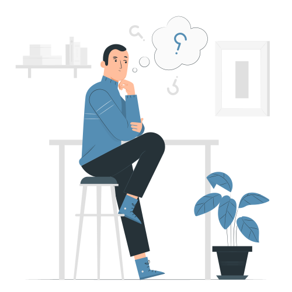

Questions fréquemment posées

Orticle est une application de publication en ligne développée par Othmane Ouirdy et Oumaima Moughazli et lancée en 2021.
Vous pouvez trouver une grande variété de contenu. Comme point de départ, les sujets peuvent être divisés en :
• Technologie
• Économie
• Santé
• Développement personnel
• Psychologie
• Envirenement
• Science
• Politique
• Presse
• Technologie
• Économie
• Santé
• Développement personnel
• Psychologie
• Envirenement
• Science
• Politique
• Presse
Les réseaux sociaux traditionnels fonctionnent avec des statuts ou des publications, récompensant la polarisation et la négativité.
Orticle fonctionne avec des idées, extraites d'un contenu déjà existant. Un utilisateur peut lire, organiser et créer ses propres cachettes à partir des articles.
Tout ce dont vous avez besoin est un compte et vous êtes prêt à découvrir de bonnes idées!
L'une des plus grandes qualités de Orticle est la diversité des écrivains. De nombreux écrivains émergents publient leur contenu en ligne pour la première fois.
Non. Orticle fournit une réponse définitive à ce sujet : "La publication et la lecture sur Orticle est gratuite…"
Vous pouvez créer autant que vous voulez. Il n'y a pas de limite au nombre des articles ou des orticles que vous désirez partager avec la communauté.
Si vous ne trouvez pas se que vous cherchez veuillez contacter notre support
Contacter